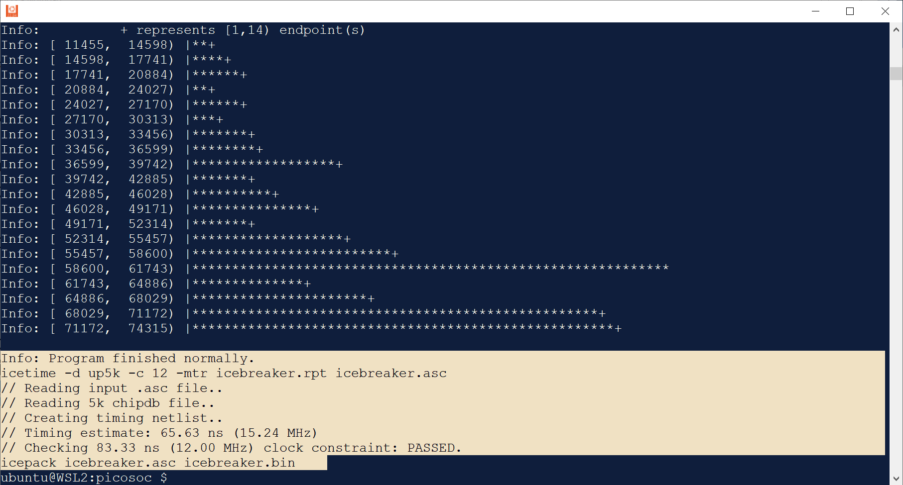
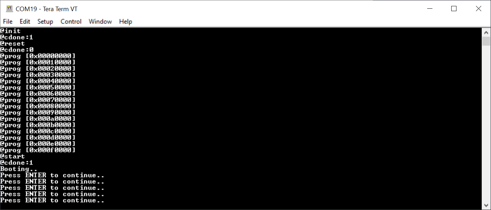

การทดลองใช้งาน PicoRV32 Soft-Core CPU ในเบื้องต้น สำหรับบอร์ด Lattice iCE40 FPGA#
Keywords: Lattice iCE40 FPGA, Open Source Hardware, OSHW FPGA Boards, FOSS FPGA Design Tools, PicoRV32
▷ PicoRV32#
บทความนี้นำเสนอการทดลองใช้งาน PicoRV32 ซึ่งเป็น 32-bit Soft-Core CPU ตามสถาปัตยกรรมของซีพียูที่มีชื่อว่า RISC-V (ออกเสียงว่า "RISC-FIVE") โดยนำมาใช้กับบอร์ด iCE-Sugar ที่มีชิป Lattice iCE40UP5K FPGA เป็นองค์ประกอบหลักของบอร์ด
RISC-V เป็นสถาปัตยกรรมของชุดคำสั่งแบบเปิดและฟรี (Free and Open ISA) มีต้นกำเนิดมาจากทีมวิจัยที่มหาวิทยาลัย University of California at Berkeley (USA) จากนั้นจึงมีการรวมตัวเป็นองค์กรเพื่อดำเนินการพัฒนาต่อและเผยแพร่ภายใต้ชื่อ RISC-V Foundation
PicoRV32 ถูกออกแบบโดย Clifford (Claire) Wolf โดยใช้ภาษา Verilog เริ่มต้นในปีค.ศ. 2015 เผยแพร่โค้ดภายใต้ลิขสิทธิ์ ISC License (คล้ายกับ MIT License) มีการนำมาใช้กับบอร์ด เช่น Lattice iCE40-HX8K และ icoBoard ตั้งแต่ปีค.ศ. 2016 และใช้กับซอฟต์แวร์ "Project IceStorm" ซึ่งเป็น Open Source เวอร์ชันล่าสุดคือ PicoRV32 v1.0 (Release Date: March 3, 2019)
PicoRV32 ใช้สถาปัตยกรรมของชุดคำสั่งของ RISC-V ที่เป็น 32-bit Integer ISA: RV32[IMC]
ชิปอย่างเช่น Espressif ESP32-S2 และ ESP32-S3 ก็มีการใช้งาน PicoRV32 core อยู่ภายใน ซึ่งเน้นการทำงานแบบประหยัดพลังงาน และทำหน้าที่เป็น ULP (Ultra-low-power) coprocessor ในขณะที่ซีพียูหลัก Xtensa LX7 Core จะประมวลผลได้เร็วกว่า แต่ก็ใช้พลังงานมากกว่า
RISC-V Extensions
I: Load-store achitectureM: Integer multiplication and division.C: Compressed instructions (16-bit instructions)
นอกจากนั้นแล้ว PicoRV32 Core ยังได้จำแนกออกเป็น 3 รูปแบบการใช้งาน คือ
picorv32: มีการใช้งานบัสขนาด 32 บิต อย่างง่าย เพื่อเชื่อมต่อระหว่างซีพียูกับวงจรอื่นpicorv32_axi: รองรับการใช้งาน AXI-4 Lite Bus Masterpicorv32_wb: รองรับการใช้งาน WishBone Bus Master
รูป: บล็อกไดอะแกรมของตัวอย่างดีไซนที่มีการใช้งาน PicoSoC
รูป: บล็อกไดอะแกรมสำหรับ PicoRV32 - Lattice iCE40HX-8K (Source: 7th RISC-V Workshop, November 2017)
PicoSoC
- PicoSoC เป็นตัวอย่างการสร้างวงจรดิจิทัลที่มีการใช้งาน PicoRV32 Core สำหรับนำไปทดลองใช้งานกับบอร์ด iCE40 FPGA
- ไฟล์
picosoc.vเป็นโมดูล Verilog ที่ภายในมีการใช้งาน PicoRV32 Core จากไฟล์picorv32.v - มีการใช้งานหน่วยความจำ On-chip SRAM สำหรับการทำงานของซีพียู ใช้ Block SRAM
ของชิป FPGA โดยปรกติแล้ว ก็จะมีขนาดเล็กและจำกัด เช่น 1024 words (4KB)
- ชิป iCE40 UltraPlus FPGA มีหน่วยความจำภายที่เรียกว่า Single-Port SRAM
ขนาดความจุโดยรวม 4x 256KBits (128KB) หรือ 32,768 Words และจะถูกใช้ในการสร้าง *SRAM
(
ice40up5k_spram)
- ชิป iCE40 UltraPlus FPGA มีหน่วยความจำภายที่เรียกว่า Single-Port SRAM
ขนาดความจุโดยรวม 4x 256KBits (128KB) หรือ 32,768 Words และจะถูกใช้ในการสร้าง *SRAM
(
- สามารถเข้าถึงหน่วยความจำภายนอก (Q)SPI Flash เช่น การรันโค้ดจากหน่วยความจำแฟลชภายนอกได้
- ในชิปหน่วยความจำแฟลช ช่วงแรกที่มีขนาด 1MB จะใช้สำหรับการเก็บข้อมูลของไฟล์ "บิตสตรีม" สำหรับชิป FPGA
- PicoSoC มีวงจรอื่นรวมอยู่ด้วย เช่น
- SPI Flash Memory Controller (
spimemio): สำหรับการอ่านข้อมูลและโปรแกรมจากหน่วยความจำแฟลชภายนอก - Simple UART (
simpleuart.v): สำหรับการเชื่อมต่อแบบบิตอนุกรม (default baudrate: 115200)
- SPI Flash Memory Controller (
- ไฟล์
icebreaker.vเป็นโมดูล Verilog ที่มีการใช้picosocเพื่อนำไปใช้กับชิป iCE40UP5K ของบอร์ด iCE-Breaker และไฟล์icebreaker_tb.vเป็นไฟล์ Verilog Testbench ซึ่งต้องใช้โปรแกรม Icarus Verilog ในการจำลองการทำงาน - ไฟล์
icebreaker.pcfเป็นไฟล์ที่ใช้กำหนดหมายเลขขาของชิป FPGA สำหรับสัญญาณ I/O ของวงจร- วงจรทำงานด้วยสัญญาณ Clock ที่มีความถี่ 12MHz โดยรับสัญญาณอินพุตที่ขา Pin 35
- ซอร์สโค้ดภาษาซีสำหรับการเขียนโปรแกรมอยู่ในไฟล์
firmware.cและโค้ดสำหรับ Startup อยู่ในไฟล์start.s
PicoRV32 / PicoSoC สามารถนำมาใช้กับชิป Lattice iCE40 ได้หลายรุ่น เช่น iCE40HX8K และ iCE40UP5K และมีบอร์ด FPGA ที่สามารถนำมาทดลองใช้ได้ เช่น
- Lattice iCE40HX-8K Evaluation Board
- iCEBreaker (iCE40UP5K) Board
▷ ซอฟต์แวร์ที่จำเป็นต้องใช้#
การแปลงโค้ด Verilog HDL ของวงจร PicoRV32 / PicoSoC ให้ใช้งานได้กับชิป Lattice iCE40 FPGA จะต้องใช้โปรแกรมที่เป็น Open Source ซึ่งจะไม่ขอกล่าวถึงในบทความนี้ ดังนั้นแนะนำให้ผู้อ่านได้ศึกษาขั้นตอนการติดตั้งซอฟต์แวร์ดังกล่าว ได้จากบทความ: "การใช้งานซอฟต์แวร์ Open Source FPGA Design Tools สำหรับบอร์ด Lattice iCE40 FPGA" และได้ทำการติดตั้งให้พร้อมใช้งานสำหรับ Ubuntu
ในส่วนที่เกี่ยวข้องกับการคอมไพล์โค้ดสำหรับ RISC-V CPU
จะต้องใช้ Cross-Compilation GNU Toolchain for RISC-V
ซึ่งเป็นซอฟต์แวร์ Open Source แต่ผู้ใช้จะต้องมาทำขั้นตอนคอมไพล์เอง (Build from Source Code)
https://github.com/riscv/riscv-gnu-toolchain
แต่เพื่อความสะดวก ผู้ใช้สามารถดาวน์โหลดไฟล์ Binary Executables ได้จาก SiFive's Github Repo
เวอร์ชันที่ได้ดาวน์โหลดมาทดลองสำหรับ Ubuntu 22.04 LTS คือ Release Version: December 2020 (2020.12.8) ประกอบด้วยโปรแกรมที่เกี่ยวข้องดังนี้
- GCC 10.2
- Binutils 2.35
- Newlib 4.1
- GDB 10.1
- Spike-DASM 1.0.1
- OpenOCD 0.10.0
ขั้นตอนการดาวน์โหลดไฟล์และติดตั้งในระบบ Ubuntu 22.04 LTS มีการทำคำสั่งดังนี้
# Download and extract the archive file for RISCV64 Toolchain.
$ RISCV_TOOLS=riscv64-unknown-elf-toolchain-10.2.0-2020.12.8; \
TGZ_FILE=${RISCV_TOOLS}-x86_64-linux-ubuntu14.tar.gz; \
URL=https://static.dev.sifive.com/; \
URL+=dev-tools/freedom-tools/v2020.12/; \
URL+=$TGZ_FILE; echo "Downloading $URL ..."; \
wget $URL -c -O $TGZ_FILE && \
tar xfz $TGZ_FILE && rm -f $TGZ_FILE
# Move the directory to /opt/
$ sudo mv ${RISCV_TOOLS}-* /opt/${RISCV_TOOLS}-x86_64
$ export PATH="$PATH":/opt/${RISCV_TOOLS}-x86_64/bin
# Show the version of the 'riscv64-unknown-elf-gcc' program.
$ riscv64-unknown-elf-gcc --version | head -n 1
ถ้าต้องการจำลองการทำงานของ PicoSoC จะต้องติดตั้งและใช้งานโปรแกรม Icarus Verilog ก่อน ซึ่งมีขั้นตอนสำหรับการติดตั้งและใช้งานใน Ubuntu ดังนี้
## Build and install Icarus Verilog.
$ cd ~/Tools/
$ git clone https://github.com/steveicarus/iverilog
$ cd iverilog && sh autoconf.sh && ./configure
$ make -j $(nproc)
$ sudo make install
# Check the version of the 'iverilog' tool.
$ iverilog -V | sed -n 1p
Icarus Verilog version 13.0 (devel)
ขั้นตอนการดาวน์โหลดและคอมไพล์มีดังนี้
# PicoRV32 - A Size-Optimized RISC-V CPU
$ cd ~/
$ git clone https://github.com/YosysHQ/picorv32
$ cd ./picorv32/picosoc
แก้ไขไฟล์ Makefile ในบรรทัดแรก เพื่อตั้งชื่อของคอมไพล์ที่จะใช้งานให้ถูกต้อง
CROSS=riscv64-unknown-elf-
จากนั้นให้ลองทำคำสั่ง make เพื่อการจำลองการทำงานของวงจร PicoSoC ดังนี้
# Simulate the PicoSoC for iCE-Breaker Board.
$ make icebsim
รูป: การจำลองการทำงานของวงจร PicoSoC โดยใช้ Icarus Verilog Simulator
รูป: การแสดงคลื่นสัญญาณของวงจร PicoSoC โดยใช้ข้อมูลจากไฟล์
testbench.vcd และเปิดไฟล์ด้วยโปรแกรม GTKWave Viewer
ถัดไปหากต้องการสร้างไฟล์ "บิตสตรีม" สำหรับชิป FPGA ของบอร์ดทดลอง ให้ลองทำคำสั่งต่อไปนี้
# Build the .bin files (firwmare and bitstream) for iCE-Breaker Board.
$ make icebreaker_fw.bin
$ make icebreaker.bin
ผลจากการสังเคราะห์วงจรเพื่อนำไปใช้กับชิป iCE40UP5K ระบุว่า มีการใช้ Logic Cells (LUT4) จำนวน 4209/ 5280 หรือ 79% ใช้ SPRAM ทั้งหมด วงจรสามารถทำงานด้วยความถี่ 12MHz หรือสูงกว่าได้ แต่ไม่เกินประมาณ 15MHz ซึ่งถือว่าค่อนข้างต่ำ

รูป: ตัวอย่างการทำคำสั่ง เพื่อสร้างไฟล์ .bin สำหรับบอร์ด iCE-Breaker
▷ การใช้งานสำหรับบอร์ด iCE-Sugar#
บอร์ด FPGA ที่ได้เลือกมาทดลองใช้งานตามที่ได้กล่าวไปคือ iCE-Sugar ของ Muse Lab บอร์ดนี้มีความเหมือนและความแตกต่างจากบอร์ด iCE-Breaker ของ Bit-Squared ดังนี้

รูป: แผนผังของบอร์ด iCE-Breaker
- สิ่งที่มีเหมือนกันทั้งสองบอร์ด
- ใช้ชิป iCE40UP5K-SG48I เหมือนกัน
- ใช้สัญญาณอินพุตสำหรับ Clock ความถี่ 12MHz ป้อนเข้าที่ขา Pin 35
- มีขา I/O สำหรับ 3-pin RGB (active-low) เหมือนกันทั้งสองบอร์ด
- มีหน่วยความจำแฟลชภายนอก SPI Flash เชื่อมต่อขาสัญญาณเหมือนกัน (แต่มีขนาดที่แตกต่างกัน และ iCE-Breaker v1.0e ใช้หน่วยความจำแบบ 16MB QSPI-DDR Flash)
- ความแตกต่าง
- บอร์ด iCE-Breaker มีไอซี FTDI FT2232H ทำหน้าที่เป็น
USB-to-SPI / USB-to-Serial Bridge
ทำหน้าที่เป็นตัวโปรแกรมข้อมูลลงหน่วยความจำแฟลช และเชื่อมต่อกับชิป FPGA สำหรับ Serial Interface
และใช้คำสั่ง
iceprogสำหรับการโปรแกรมชิป - บอร์ด iCE-Sugar ใช้ชิปไมโครคอนโทรลเลอร์ (STM32F103)
ทำหน้าที่เป็นวงจรที่เรียกว่า iCE-Link สำหรับการโปรแกรมข้อมูลลงหน่วยความจำแฟลช และเชื่อมต่อกับชิป FPGA สำหรับ Serial Interface
รองรับการโปรแกรมด้วยวิธีของ DAPLink (Drag & Drop Programming)
หรือใช้คำสั่ง
icesprogของ Muse Lab สำหรับการโปรแกรมชิป - ขา UART RX/TX ของบอร์ดiCE-Breaker คือ Pin 6 / 9 แต่สำหรับ iCE-Sugar คือ Pin 4 / 6
- ดูการใช้งานขา I/O ของบอร์ด iCE-Sugar ได้จากไฟล์
icesugar.pcfและเปรียบเทียบกับไฟล์icebreaker.pcfเพื่อดูความแตกต่าง
- บอร์ด iCE-Breaker มีไอซี FTDI FT2232H ทำหน้าที่เป็น
USB-to-SPI / USB-to-Serial Bridge
ทำหน้าที่เป็นตัวโปรแกรมข้อมูลลงหน่วยความจำแฟลช และเชื่อมต่อกับชิป FPGA สำหรับ Serial Interface
และใช้คำสั่ง
ดังนั้น ในขั้นตอนถัดไป ให้แก้ไขไฟล์ icebreaker.pcf ในส่วนที่เป็นขา UART RX/TX
ในตรงกับการใช้งานสำหรับบอร์ด iCE-Sugar
# UART for iCE-Sugar
set_io ser_rx 4
set_io ser_tx 6
จากนั้นให้ทำคำสั่งต่อไปนี้
# Create the bitstream and the firmware files.
$ make clean icebreaker_fw.bin icebreaker.bin
# Merge the two binary files into a single file (picorv32.bin).
$ truncate -s 1048576 icebreaker.bin; \
cat icebreaker.bin icebreaker_fw.bin > picorv32.bin
เมื่อได้ไฟล์ picorv32.bin ก็ให้เชื่อมต่อบอร์ด iCE-Sugar
กับคอมพิวเตอร์ของผู้ใช้แล้วจะมองเห็นไดรฟ์ชื่อ iCELink จากนั้นจึงนำไฟล์
picorv32.bin ไปใส่ลงในไดรฟ์ดังกล่าว
และเปิดโปรแกรมที่ใช้รับข้อมูลจากพอร์ต Serial เพื่อดูข้อความที่ถูกส่งออกมาจากบอร์ด

รูป: ตัวอย่างข้อความเอาต์พุตจากบอร์ด iCE-Sugar ผ่านทาง USB-to-Serial Bridge
ถัดไปให้ลองใช้โค้ดตัวอย่างต่อไปนี้ ก่อนอื่นให้สำเนาไฟล์ firmware.c เก็บไว้ก่อน
แล้วจึงแก้ไขไฟล์ตามตัวอย่างโค้ดต่อไปนี้
โค้ดตัวอย่างนี้จะทำให้ RGB LED สีแดงและสีเขียว ติดดับสลับกันไป และส่งข้อความแสดงสถานะของ LED มาทาง UART
#include <stdint.h>
#include <stdbool.h>
// UART
#define reg_uart_clk_rate (*(volatile uint32_t*)0x02000004)
#define reg_uart_data (*(volatile uint32_t*)0x02000008)
// LEDs
#define reg_leds (*(volatile uint32_t*)0x03000000)
// macro for software-defined delay (approx. x*100ms)
#define _delay(x) { for(volatile int j=0; j < 2320*(x); j++); }
void putchar(char c) {
if (c == '\n') {
putchar('\r');
}
reg_uart_data = c;
}
void print_str(const char *p) {
while (*p) {
putchar(*(p++));
}
}
void main(void) {
reg_uart_clk_rate = 104; // Set UART clock rate
print_str("PicoRV32 / PicoSoC using iCE-Sugar...\n");
while(1) {
print_str("LED: Red\n");
reg_leds = ~(1<<6);
_delay(5);
print_str("LED: Green\n");
reg_leds = ~(1<<7);
_delay(5);
}
}
เมื่อแก้ไขโค้ดแล้ว ให้ทำคำสั่งต่อไปนี้ เพื่อสร้างไฟล์ picorv32.bin ใหม่อีกครั้งแล้วจึงนำไปทดลองใช้งาน
$ make icebreaker_fw.bin icebreaker.bin
$ truncate -s 1048576 icebreaker.bin; \
cat icebreaker.bin icebreaker_fw.bin > picorv32.bin
รูป: ตัวอย่างข้อความเอาต์พุต
▷ ตัวอย่างการใช้คำสั่ง icesprog#
ตัวอย่างการใช้คำสั่ง icesprog
ของ Muse Lab สำหรับการเขียนข้อมูลลงในหน่วยความจำแฟลช มีดังนี้
# Find / List the USB device by the VID/PID.
$ lsusb | grep "ID 1d50:602b"
Bus 001 Device 002: ID 1d50:602b OpenMoko, Inc. FPGALink
# Detect the iCE-Sugar board.
$ sudo icesprog -p
probe chip
board: [iCESugar]
flash: [w25q64] (8MB)
done
# Erase the on-board Flash memory.
$ sudo icesprog -e
erase chip
done
# Write the bitstream file (file size: 1MB max).
$ sudo icesprog <bitsream.bin>
# Write the firmware file (with 1MB address offset).
$ sudo icesprog -o 0x100000 <firmware.bin>
▷ กล่าวสรุป#
บทความนี้ได้นำเสนอตัวอย่างและขั้นตอนการทดลองใช้งาน PicoRV32 SoftCore CPU สำหรับชิป FPGA ในเบื้องต้น โดยใช้บอร์ด iCE-Sugar iCE40UP5K และ ซอฟต์แวร์ประเภท Open Source ภายใต้ระบบปฏิบัติการ Ubuntu Linux เพื่อการคอมไพล์โค้ดต่าง ๆ ให้ได้ไฟล์บิตสตรีมและไฟล์เฟิร์มแวร์ แล้วทำไปทดลองใช้กับบอร์ด FPGA
This work is licensed under a Creative Commons Attribution-ShareAlike 4.0 International License.
Created: 2023-08-20 | Last Updated: 2023-08-20